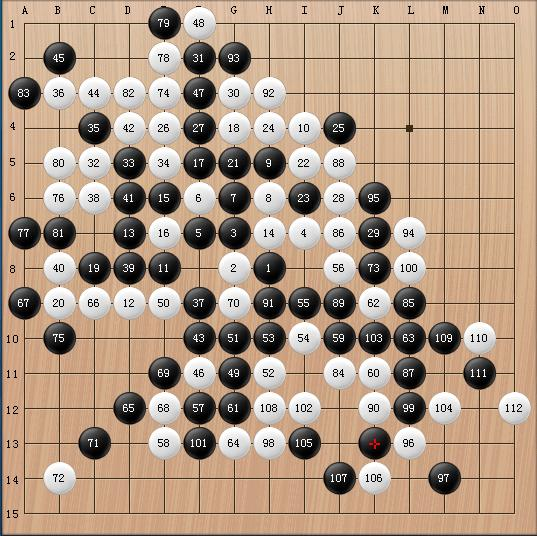

[棋局点评]早棋在无禁下的一盘过百和棋
#1 [棋局点评]早棋在无禁下的一盘过百和棋 作者：岳麓小棋后 发表时间：2009-1-4 17:21:01

这盘棋从质量上来说没什么研究和观赏价值,是我早期在无禁下的一盘过百和棋,我执白。


#2 Re:早棋在无禁下的一盘过百和棋 作者：茗弈小刀 发表时间：2009-1-5 11:27:40
我觉得这样自己下过的棋，回头来看自己分析，这样也是种进步！希望社里的朋友向小棋后学习，把自己下过的棋来自己分析，评论一下。真的会有收获！#3 Re:早棋在无禁下的一盘过百和棋 作者：雅典娜 发表时间：2009-1-5 12:52:48
 好啊!
好啊!
#4 Re:早棋在无禁下的一盘过百和棋 作者：爱好者友 发表时间：2009-1-5 12:55:23
厉害
#5 Re:早棋在无禁下的一盘过百和棋 作者：香雪美景 发表时间：2009-1-5 15:26:06
棒!师傅说的太有道理了
#6 Re:早棋在无禁下的一盘过百和棋 作者：阿花哥 发表时间：2009-1-5 15:31:59
 嗯，小棋后，哈哈，写了那么多，累不！
嗯，小棋后，哈哈，写了那么多，累不！
#7 Re:早棋在无禁下的一盘过百和棋 作者：缘来 发表时间：2009-1-25 4:53:31
棋后果然出手不凡，一定是位写论文高手吧